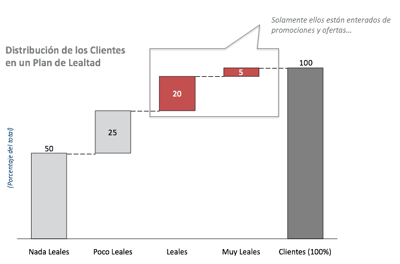
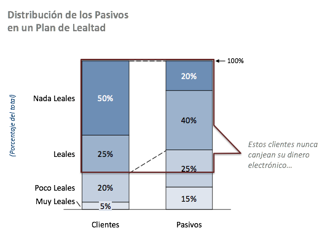
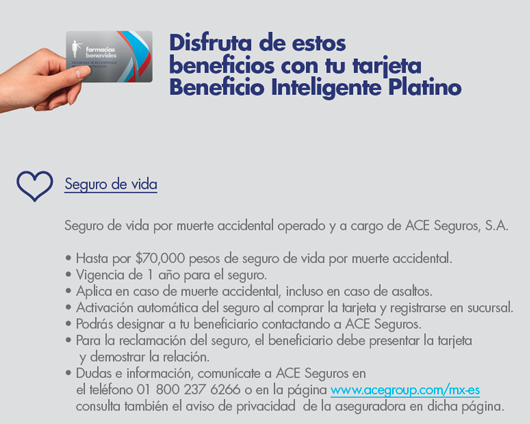

Propósito
En este estudio se equematiza un potencial producto para planes de lealtad en la industria de las ventas al menudeo (retail). El producto tiene el beneficio directo de mejorar el balance de la empresa, reduciendo el pásivo inherente en todo plan de lealtad estilo “dinero electrónico” o “monedero”.
Problema de Mercado
- Los programas de lealtad se han vuelto una necesidad de negocio, particularmente con las generaciones más nuevas (1), por lo que eliminarlos es una opción poco viable desde el punto de vista de negocio.
- Sin embargo, los planes de lealtad generan costos importantes de administración que compiten por recursos de la empresa.
- El manejo de los pásivos generados a travéz de estos programas puede ser complejo y difícil.
- El riesgo para el negocio es grande: el cobro del pásivo por un ente externo legal (autoridad fiscal) o de los mismos clientes, puede poner en peligro el modelo de negocio.
~ | Curvas de mercado
Generalmente, en productos de lealtad, pocos clientes hacen uso extensivo del programa y si la entrada es relativamente barata, duplican su existencia en el padrón. Esto significa que una cantidad importante de clientes no están obteniendo beneficios directos de la empresa, pero si general un pásivo importante en los libros.

Claramente, de existir una el costo de mantener a 3/4 de los clientes reditua

Casos de éxito
~ | Farmacias Benavides
En México, Farmacias Benavides ya ofrece un seguro de vida por muerte accidental en su tier más alto (platino). El seguro esta prominentemente en vista en su sitio de promoción de su tarjeta de beneficios:

La suma asegurada es de $70 mil pesos y
Canales de ganancias adicionales
Tipícamente, todos los esquemas de compensación de lealtad están basados en transacciones: el cliente compra o hace algo a cambio de puntos.
Con la tecnología, esto significa que la transaccionalidad es fácilmente minada para encontrar importantes datos de comportamiento del consumidor. Una tienda de autoservicio en Inglaterra (2) encontró un cliente en las compañias de seguros, al venderles la información recabada en sus transacciones. La empresa de seguros, a su vez, usó la información para contactar a clientes potenciales con precios muy bajos (por ejemplo, los de bajo riesgo, que compran productos saludables).
Aun y cuando existen debates éticos de estos programas, lo cierto es que se trata de una situación provechosa para todos: el supermercado obtuvo un canal adicional de ingresos, la aseguradora un cliente de muy bajo riesgo y el cliente un seguro más barato.
En México, la Ley Federal de Protección de Datos Personales en Posesión de los Particulares (LFPDPPP) prohíbe algunos de estas negociaciones. Sin embargo, dada la desaciación pertinente del individuo, es posible vender paquetes de información agregada, que también serían de utilidad para aseguradoras.
Fuentes
Notas
-
Estudios revelan que hasta 70% de jóvenes (millenials) estarían dispuestos a abandonar una empresa que retire sus planes de lealtad basados en recompensas. ↩